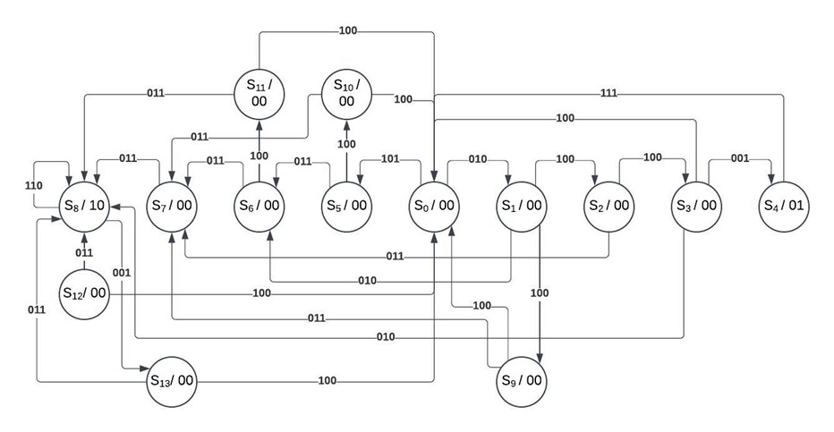

Digital Lock (FPGA)
Verilog FSM on an Altera DE2 with debounced one-pulse inputs, unlock sequence, alarm, and reset.

Designed and implemented a synchronous digital lock as a finite state machine (FSM) in Verilog-HDL on an Altera DE2 board. Three push-buttons (A/B/C) are synchronized and debounced into one-pulse signals aligned to the clock.
- Unlock sequence: B → C → A → C asserts
UNLOCK - Tamper protection: any 4-input sequence with a wrong key triggers
ALARM - Reset: A → A returns to initial (most states)
- Alarm recovery: C → A clears
ALARM
One-pulse circuits prevent multiple activations per press and ensure clean FSM transitions.
FSM with 13 states (S0–S13). Outputs include UNLOCK and ALARM.
Transitions use 3-bit labels ABC (e.g., 011 = “B or C”, not simultaneous).

Browse Verilog and downloads:
- HDL: Verilog
- Board: Altera DE2
- IDE: Quartus
- Concepts: Debounce + one-pulse, synchronous FSM, alarm/unlock logic